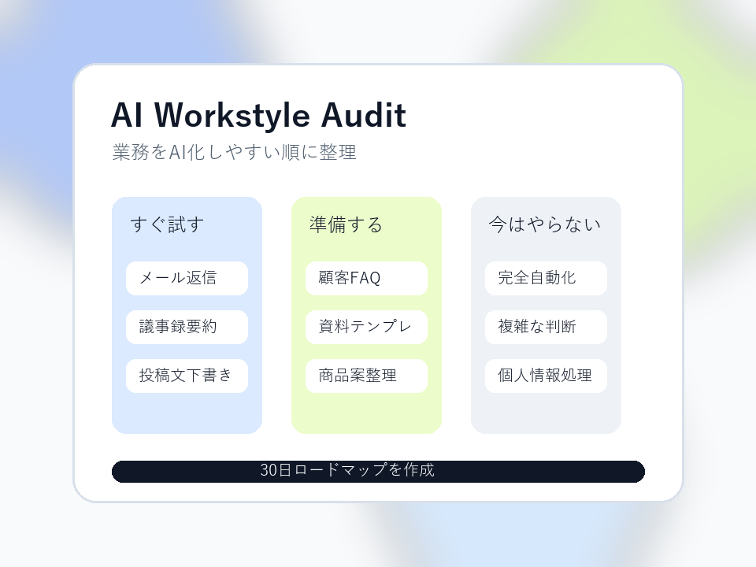

ツール比較で止まる
便利そうな情報は増えるのに、自分の業務に落ちません。
AI導入前の無料業務診断
15分の無料診断で、あなたの業務をAI化しやすい順に整理し、30日で試す改善ロードマップを作ります。

Problem
本当に必要なのは、どの作業を任せるか、どの順番で試すかを決めることです。
便利そうな情報は増えるのに、自分の業務に落ちません。
毎回その場で聞き方を考えるため、業務の型になりません。
どの作業がどれだけ楽になったか測れず、続きません。
Diagnosis
Report
すぐ試す作業、準備が必要な作業、今はやらない作業を分けます。成果保証ではなく、実行順序を明確にするためのレポートです。
Reason
特定ツールの購入を前提にせず、業務から逆算します。
専門用語を減らし、今日の作業に置き換えます。
やることだけでなく、今やらないことも整理します。
Flow
FAQ
受けられます。ツールの知識より、今の業務を整理することを重視します。
保証はしていません。AI化しやすい業務と実行順序を整理する診断です。
必要ありません。既に使っているツールがあれば、それを前提に整理できます。
Contact
入力内容は診断対応のために使用します。送信先は仮設定です。